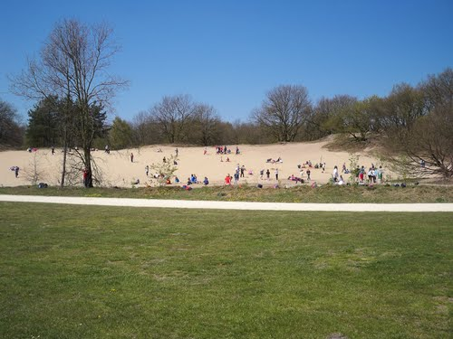

Konijnenberg Vosselaar
Home
Index
Galerij
Info
De Konijnenberg is ten allen tijde open en volledig gratis!
Voor meer info kan u terecht bij de gemeente Vosselaar.
Openingsuren: Elke dag van 08:30-17:00
Mail:toerisme@vosselaar.be
Telefoon: 014 60 08 44